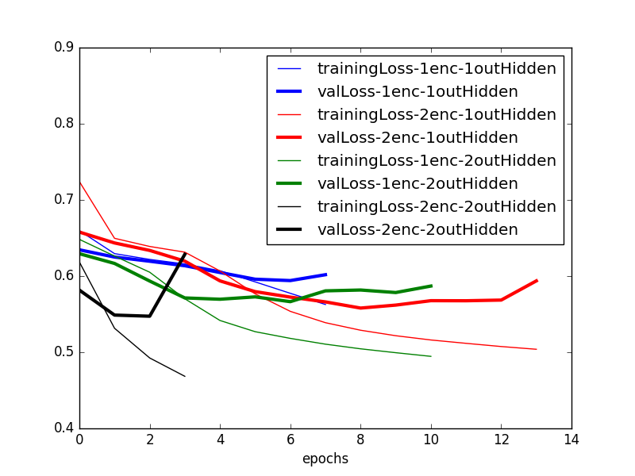
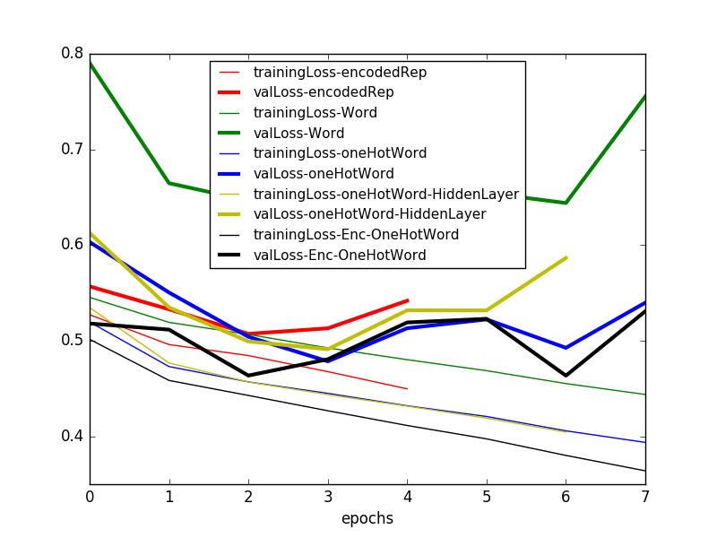

Accuracies in paper: LIPREADING WITH LONG SHORT-TERM MEMORY:
Using LipReader "LSTM-h256-depth2-LSTMactivtanh-enc64-encodedActivsigmoid-Adam-1e-03-GRIDcorpus-s0107-s0909-tMouth-vMouth-NOmeanSub-epoch099-tl0.3307-ta0.8417-vl0.3782-va0.8304.hdf5"
Read Has My Algorithm Succeeded? An Evaluator for Human Pose Estimators for reference on Evaluators/Critics/Assessors


Inputting one-hot encoded word is better than the word itself
Inputting intermediate layer vector from LipReader + one-hot encoded predicted word seems to work the best
Considering the best LipReader and Critic (so far):
trainPrecision: Precision of the critic on the training data, i.e. among its results on the training data, in how many cases is the critic able to correctly tell if the output of the LipReader is correct or not
totalTrainPrecision = 0.859839499319, meanTrainPrecision = 0.55379656487 (Better to take a weighted mean instead?)
totalTrainRecall = 0.579317849492, meanTrainRecall = 0.334912278473
totalValPrecision = 0.833484986351, meanValPrecision = 0.901960784314
totalValRecall = 0.581402729292, meanValRecall = 0.980392156863
trainPrecisionPerWord = [ 0.1538 0.9335 0.6378 0.3026 0.8336 0.8729 0.9042 0.6364 0. 0. 0.7455 0.2857 0.8235 0.8687 0.4762 0.8826 0.2 0. 0.7377 0.6939 0.4 0. 0.925 0.3846 0. 0.5912 0.9177 0.3684 0.7807 0.1795 0.9336 0.9705 0.4286 0. 0.7869 0. 0.8554 0.7605 0.8428 0.9759 0.1429 0.8437 0.7615 0.5625 0.4571 0.8529 0.9452 0. 0.5573 0.1333 0.8973]
meanTrainPrecision = 0.55379656487
totalTrainPrecision = 0.859839499319
trainRecallPerWord = [ 0.0139 0.6781 0.193 0.3382 0.7616 0.8589 0.5037 0.0642 0. 0. 0.2087 0.0185 0.3986 0.3879 0.1064 0.8074 0.0641 0. 0.2961 0.2636 0.0421 0. 0.6498 0.0347 0. 0.2287 0.5673 0.0534 0.8695 0.4118 0.8336 0.7455 0.0517 0. 0.5675 0. 0.8085 0.3759 0.3777 0.721 0.0213 0.5849 0.2115 0.0796 0.1046 0.8516 0.5301 0. 0.6404 0.0889 0.6661]
meanTrainRecall = 0.334912278473
totalTrainRecall = 0.579317849492
valPrecisionPerWord = [ 0. 0.9231 0.6667 0.0556 0.8209 0.8704 0.9121 nan 0. 0. 0.8462 nan 0.7273 0.9032 nan 0.8358 0. 0. 0.8824 0.5 0.1667 0. 0.875 0.25 0. 0.55 0.8879 0.3333 0.7292 0.0909 0.8816 0.9621 0. 0. 0.7835 nan 0.8 0.8333 0.7586 0.9708 nan 0.7959 0.75 0.3333 0.25 0.7871 0.9759 0. 0.6154 0. ]
meanValPrecision = 0.901960784314
totalValPrecision = 0.833484986351
valRecallPerWord = [ 0. 0.6593 0.1692 0.25 0.7534 0.8443 0.5188 0. 0. nan 0.275 0. 0.3265 0.3836 0. 0.8235 0. 0. 0.3629 0.1 0.1429 0. 0.6087 0.0385 0. 0.2292 0.5938 0.0714 0.875 1. 0.8428 0.7744 0. 0. 0.6179 0. 0.8333 0.5 0.3014 0.7348 0. 0.661 0.2045 0.1 0.1111 0.8133 0.4821 0. 0.7273 0. ]
meanValRecall = 0.980392156863
totalValRecall = 0.581402729292